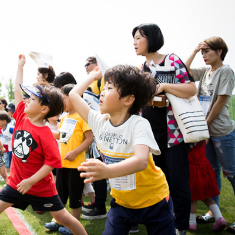
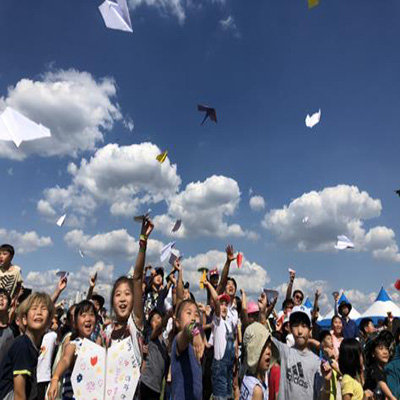

HOME > 홍보센터 > 종이비행기대회
종이비행기대회
종이 한 장으로 도전하는 국내 유일의 공식 종이비행기대회
무림페이퍼 KOREAN CUP종이비행기대회
매년 개최되고 있는 ‘무림페이퍼 KOREAN CUP 종이비행기대회’는 ‘무림페이퍼’가 위치해 있는 [진주지역]에서 개최됩니다. 매년 상황에 따라 개최지역이 변경될 수 있으니, 대회 안내를 꼭 확인해주세요!
대회구분
- 전국리그 개최지역 외 거주자 참가 가능하나 지역리그와 중복참가 불가
-
지역리그
개최지역 거주자 참가 가능하나
개최지역 외 거주자 참가 불가
챔피언십 대회
전국리그와 지역리그의 각 종목별/부문별 결승전에서 1~5위에 입상한 참가자들에게 주어지는 챔피언십 결정전!
대회의 마지막 순서에서 통합 챔피언을 선정해 챔피언 레코드 인증서와 부상을 시상합니다.
※ 시상내역은 대회사정에 의해 변경될 수 있습니다.
대회종목
-
- 멀리날리기
- 찢거나 붙이거나 자르거나 하는 방법은 허용되지 않고 오직 접기 방법만 가능. 풀, 테이프 사용시 실격 현장에서 배포하는 공식 종이로 제작한 비행기만 참가 가능 착륙 지점까지의 거리를 측정 (밀려나간 거리는 인정하지 않음)
- 출전 부문 : 유치부, 초등부, 중·고등/일반부
-

- 오래날리기
- 찢거나 붙이거나 자르거나 하는 방법은 허용되지 않고 오직 접기 방법만 가능. 풀, 테이프 사용시 실격 종이비행기를 날린 뒤 시야에서 사라지기 전, 땅이나 물체에 닿기 전 시간을 측정
- 출전 부문 : 초등부, 중·고등/일반부
-

- 곡예비행
- 대회장 입구에서 배포하는 곡예비행기 KIT로 제작한 종이비행기와 미리 만들어 놓은 비행기로 참가 가능 곡예비행 점수(10점 만점, 곡예비행 점수는 루프의 직경과 모양을 기준으로 함), 비행시간 점수(1초당 1점)를 종합 심사
- 출전 부문 : 초등부, 중·고등/일반부